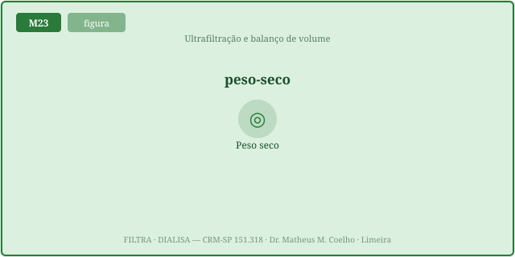
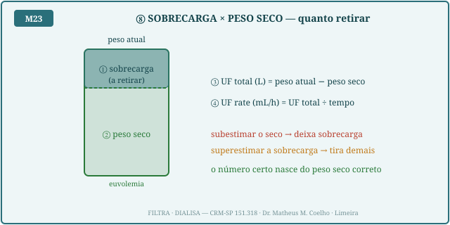
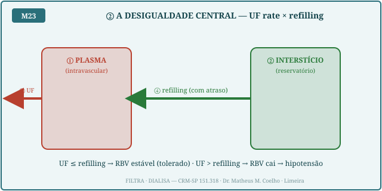
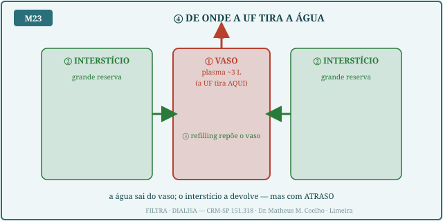
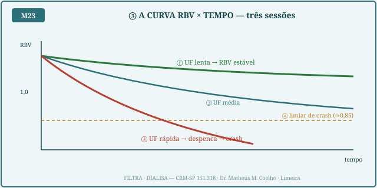
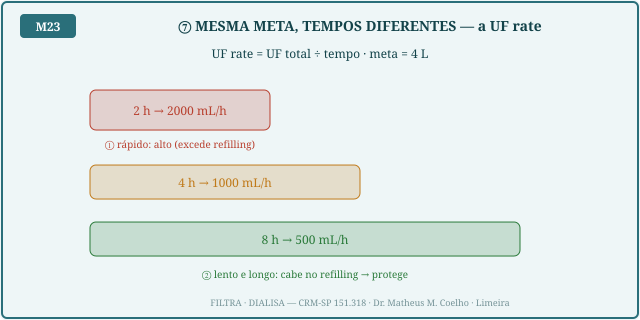
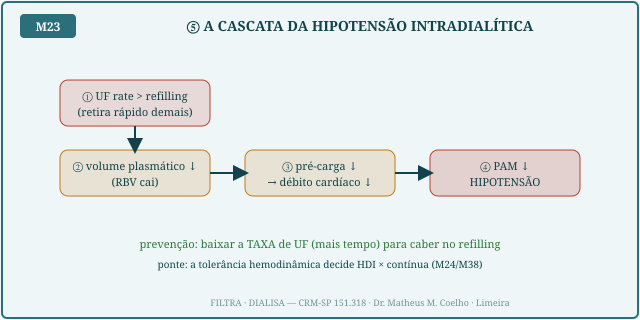
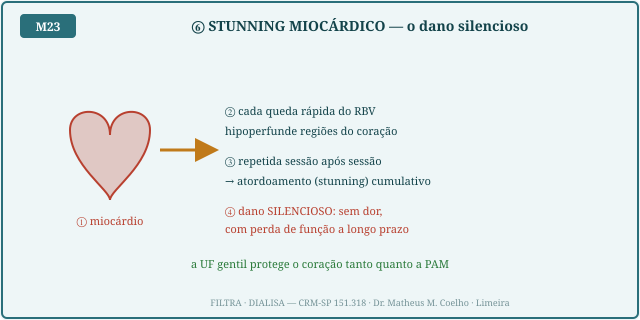

A UF retira água do plasma. O plasma murcha; o interstício devolve água pelo refilling, mas devagar. Enquanto a UF rate ≤ refilling, o RBV se mantém — homeostasia preservada. Quando a UF rate > refilling, o RBV despenca → hipotensão intradialítica e stunning miocárdico. As Fig. 1–8 voltam no Caso, na Trilha e na Avaliação.
O peso seco é o peso em que o paciente está euvolêmico. A UF total a retirar é peso atual − peso seco. Errar o alvo machuca dos dois lados: alvo baixo demais → tira água além do necessário → hipotensão/cãibra; alvo alto demais → deixa sobrecarga → edema/HVE. O dano é um vale em U com fundo único.


A UF tira do plasma; o interstício repõe o plasma pelo refilling, com atraso. O refilling é uma força restauradora: cresce com o déficit que já se instalou, é limitado por uma capacidade (oncótica/capilar) e seca perto do peso seco. Enquanto a UF rate cabe no refilling, o RBV estabiliza. Quando a UF rate supera a capacidade de refilling, o plasma murcha sem reposição → o RBV cai.


O RBV (volume sanguíneo relativo) é o termômetro: começa em 1,0 e cai conforme integra (UF − refilling). UF lenta → o RBV estabiliza acima do limiar de crash. UF rápida → o RBV despenca e cruza o limiar de crash (≈0,85) → hipotensão. É exatamente esta curva que o Instrumento desenha ao vivo.

A pérola operacional: a mesma meta de volume em menos tempo derruba a PAM, porque a UF rate sobe acima do refilling. Mais tempo (mesma meta) → UF rate menor → cabe no refilling → protege. Por isso a prevenção da hipotensão é, antes de tudo, baixar a taxa de UF (estender o tempo).

Quando a UF rate vence o refilling, a cascata é mecânica: RBV↓ → pré-carga↓ → débito↓ → PAM↓ = hipotensão intradialítica. E há um custo silencioso: cada queda rápida do RBV hipoperfunde o miocárdio → atordoamento (stunning) cumulativo, sem dor, com perda de função a longo prazo. A UF gentil protege a PAM e o coração (ponte com M24).


Sala de HDI. Cinco apresentações do balanço de volume. A pergunta de cada uma: a UF rate cabe no refilling? Qual o peso seco? O que acontece com o RBV? Volte às Fig. 3, 5 e 6.
Do plasma (intravascular) — é o único que a máquina alcança (Fig. 4). O interstício e a célula não são tocados diretamente; só repõem o plasma pelo refilling.
A água que o interstício devolve ao plasma conforme o plasma murcha. É uma força restauradora com atraso: leva tempo para responder ao déficit (Fig. 3).
UF rate × refilling. Enquanto a UF rate ≤ refilling, o RBV se mantém. Quando a UF rate > refilling, o plasma murcha sem reposição → RBV cai → hipotensão.
RBV = volume sanguíneo relativo (plasma atual / inicial). Cai porque integra (UF − refilling) ao longo da sessão. UF lenta → estabiliza; UF rápida → despenca (Fig. 5).
UF total (L) = peso atual − peso seco. UF rate (mL/h) = UF total ÷ tempo. A mesma meta em menos tempo → UF rate maior (Fig. 6, Fig. 2).
Porque a UF rate sobe acima do refilling. Mais tempo (mesma meta) → UF rate menor → cabe no refilling → protege. A taxa, não a meta, decide a tolerância.
A hipoalbuminemia (gradiente oncótico↓) e a proximidade do peso seco (reserva intersticial esgota). Com refilling pobre, a mesma UF rate que seria segura crasha (Ato 3).
O atordoamento do miocárdio pela hipoperfusão repetida das quedas rápidas do RBV. Dano cumulativo e silencioso (Fig. 8). A UF gentil é cardioprotetora.
O objetivo da UF é devolver o volume à faixa (defender o meio interno) sem despressurizar o plasma. A boa prescrição retira o excesso no ritmo que o refilling tolera — homeostasia do volume restaurada sem crash.
Os controles do Lab movem esta curva. Eixo horizontal = tempo da sessão; eixo vertical = RBV (volume sanguíneo relativo). A linha tracejada laranja é o limiar de crash (≈0,85): cruzá-la sinaliza hipotensão intradialítica provável. UF lenta → curva estável; UF rápida ou refilling pobre → a curva despenca e cruza o limiar.
| Saída | Atual | Comentário |
|---|---|---|
| UF total (L) | — | peso atual − peso seco |
| UF rate (mL/h · mL/kg/h) | — | UF total ÷ tempo |
| Capacidade de refilling (mL/h) | — | teto sustentável |
| Margem (refilling − UF rate) | — | negativa = déficit |
| RBV final · mínimo | — | termômetro do plasma |
| Erro do peso seco (kg) | — | vale em U |